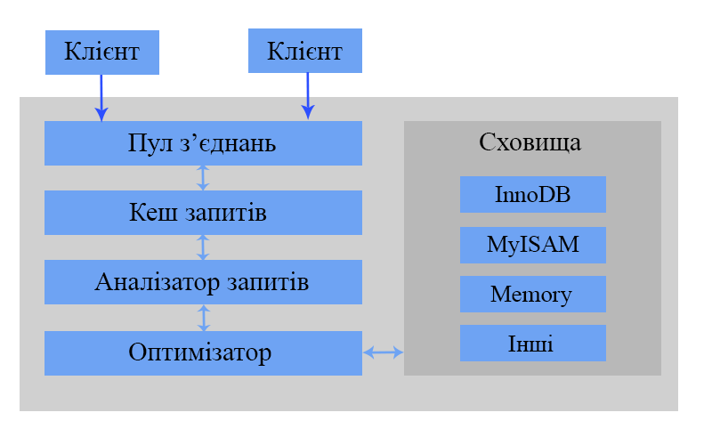

Performance Optimization
Іторія MySql
Винахідником MySQL являється Майкл Монті Віденіус (aka Monty) із шведської компанії TcX. В 1979 році він розробив засіб управління базами даних, яке називалось UNIREG.
В цей час на ринку існувала база даних mSQL (MiniSQL) — легка клієнт-серверна реляційна СУБД, створена компанією Hughes Technologies. (Давид Хьюз)
Після невдалої спроби злиття цих проектів в TcX взяли за основу UNIREG і використовували утиліти сторонніх розробників для mSQL, написали АРІ для своєї системи, який спочатку дуже співпадав з API для mSQL.
Таким чином, в травні 1995 року у компанії була база даних MySQL 1.0, яка повністтю задовольняла її потреби.
Що стосується назви, то існує два варіанти: або тому, що практично всі напрацювання компанії починалися з префікса My, або на честь дівчинки на ім'я My, дочки Майкла Монті Віденіуса.
В січні-лютому 2008 Sun Microsystems придбала розробку системи керування базами данних MySQL за $1 млрд. Після поглинання у 2009 році Sun Microsystems компанією Oracle Corporation MySQL стала власністю Oracle.
Остання стабільна версія 5.6 (05.02.2013)
Логінча архітектура MySql
Керування з'єднанями
Для кожного клієнтського з'єднання виділяється окремий потік в середині процеса сервера. Запити по даному з'єднанню виконуються в межах цього потоку. Сервер кешує потоки, так що їх не приходиться створювати або видаляти для кожного нового з'єднання.
Ідентифікація клієнтів основується на імені користувача, адресі хоста і паролю. Після ідентифікації сервер перевіряє наявність відповідних превілегій. Наприклад можливість виконувати команду SELECT для певної таблиці.
Оптимізація та виконання
MySQL виконує синтаксичний розбір запитів для створення внутрішньої структури (дерева розбору), а потім виконує ряд оптимізацій. До них належать переписування запиту, виявлення порядку читання таблиць, вибір використовуваних індексів і т.д. Ми можемо повпливати на роботу оптимізатора, включивши в запит спеціальні ключові слова-підказки.
Перш ніж виконати синтаксичний аналіз запиту, сервер звертається до кешу запитів, в якому знаходяться тільки команди SELECT і відповіді їм результати.
Керування конкурентним доступом
В будь-який момент може виникнути ситуація, при якій відразу декільком запитам необхідно одночасно змінити дані, в результаті чого виникає задача керування конкурентним доступом.
Блокування читання/запису
Блокування при читанні ресурсу являються розділяючі, тобто взаємно не блокуючі.
Блокування запису, навпаки, являється монопольним. Також блокування запису мають більш високий пріорітет, тому такі запити поміщаються в черзі перед уже існуючими запитами блокування читання.
Блокування на рівні таблиць (MyIsam)
Для таких команд як ALTER TABLE, сервер реалізовує табличне блокування не залежно від підсистеми збереження даних.
Блокування рядків (InnoDB и Falcon)
Більші можливосі конкурентного доступу, але і більші накладні витрати.
Транзакции
Транзакцією називається атомарна група запитів SQL
START TRANSACTION;
SELECT balance FROM checking WHERE customer_id = 10233276;
UPDATE checking SET balance = balance - 200.00 WHERE customer_id = 10233276;
UPDATE savings SET balance = balance + 200.00 WHERE customer_id = 10233276;
COMMIT;
ACID
Транзакцій недостатньо, якщо система не проходе тест ACID (Atomicity, Consistency, Isolation, Durability)
(Атомарність, несуперечливість, ізольованість, довговічність)
Рівні ізоляції
Стандарт SQL визначає 4 рівні ізоляції з конкретними правилами, що встановлюють які зміни доступні в середині транзакції, а які ні.
- READ UNCOMMITTED - транзакції можуть бачити результати незафіксовани транзакцій
- READ COMMITTED - транзакції можуть бачити тільки ті зміни, які були зафіксовані іншими транзакціями до моменту її початку, а створені нею зміни будуть невидимі доки вона не буде зафіксована. Можливий феномен неповторюваного читання
- REPEATABLE READ (стоїть за замовчуванням) - гарантує, що будь-які рядки які читаються в контексті транзакції будуть такі ж як і при послідовних операціях читання в межах однієї транзації. Можливий феномен фантомного читання
- SERIALIZABLE - блокує кожну строку, яку транзакція читає. На цьому рівні виникає багато затримок і конфліктів при блокуваннях.
[mysqld]
transaction-isolation = REPEATABLE-READ
| Рівень ізоляції | Грязне читання | Неповторюване читання | Фантомне читання | Блокування читання |
|---|---|---|---|---|
| READ UNCOMMITTED | Так | Так | Так | Ні |
| READ COMMITTED | Ні | Так | Так | Ні |
| REPEATABLE READ | Ні | Ні | Так | Ні |
| SERIALIZABLE | Ні | Ні | Ні | Так |
Взаємні блокування (deadlocks)
Транзакция #1
START TRANSACTION;
UPDATE StockPrice SET close = 45.50 WHERE stock_id = 4 and date = ‘2013-05-01’;
UPDATE StockPrice SET close = 19.80 WHERE stock_id = 3 and date = ‘2013-05-02’;
COMMIT;
Транзакция #2
START TRANSACTION;
UPDATE StockPrice SET high = 20.12 WHERE stock_id = 3 and date = ‘2013-05-02’;
UPDATE StockPrice SET high = 47.20 WHERE stock_id = 4 and date = ‘2013-05-01’;
COMMIT;
Спосіб яким InnoDB обробляє такі ситуації полягає в тому що відміняється та транзакція, яка захватила менше монопольних блокувань рядків. (показник легкості відкату)
Підсистеми зберігання в MySql
MyIsam
- Один із найстаріших сховищ в MySQL
- Швидкий, добре працює у випадку "багато читаємо, мало пишем"
- Підтримує повнотекстові індекси
- Індекс - B-tree
- Підтримується дописування в кінець (коли виконуюються запити на читання (конкурентні вставки))
- Блокування на рівні таблиць
- Не підтримується цілісність даних між таблицями
MyIsam на диску
- Кожна база - це окремий каталог
- Файли frm описують структуру таблиці
- MDY/MYI містять дані і індекси відповідно
- Підтримується перенесення простим копіюванням файлів
Сховище InnoDB
- Підтримує ACID
- Блокування на рівні рядка
- Підтримує зовнішні ключі
- У версії MySQL 5.6 підтримує повнотекстовий індекс
InnoDB на диску
- Всі дані зберігаються в загальному просторі даних (ibdata* ніколи не зменшується в розмірі)
- Можна налаштувати так, щоб дані, які відносяться до одної таблиці зберігались в окремих файлах ibd (параметр innodb_file_per_table)
MyISAM Merge
Це підсистема являється варіацією на тему MyISAM. Таблиця типу Merge представляє собою об'єднання декількох структурно однакових таблиць MyISAM в одну віртуальну таблицю. Корисно використовувати для ведення логів і організації сховищ даних.
Підсистема Memory
Корисна коли необхідно виконувати бистрий доступ до даних, якщо нема необхідності в їх збереженні після перезапуску, для кешування періодично агрегованих даних, для проміжних результатів при аналізі даних. Після перезапуску сервера структура зберігається, а дані втрачаються
- Підтримуються HASH індекси
- Блокування на рівні таблиці
- Не підтримує TEXT і BLOB
- Допускаються тільки рядки фіксованого розміру (varchar -> char)
Підсистема Archive
Дозволяє виконувати тільки команди INSERT і SELECT. З версії MySQL 5.1 підтримується індексування (в обмеженому вигляді). Рядки які вставляються зжимаються бібліотекою zlib. Кожеш запит SELECT потребує повного сканування.
Використовується для збору даних, в тих випадках коли при аналізі треба сканувати всю таблицю, а також коли необхідно забезпечити швидке виконання інсертів на головному сервері реплікації.
Підсистема CSV
Розглядає CSV файли як таблиці, але не підтримує індекси по них.
Підсистема Blackhole
В підсистемі Blackhole взагалі немає механізму зберігання даних. Команди INSERT ігноруються.
Використовується для налаштування реплікацій і ведення журналу аудиту.
Пошук вузьких місць
Інструменти компонентного тестування
- mysqlslap - емулює навантаження на сервер і показує дані хронометража. Можна налаштувати кількість одночасних з'єднань та передати команди
- sysbench - Призначений для представлення продуктивності ОС
- Database Test Suite
- MySQL Benchmark Suite
- ...
Mysqlslap
mysqlslap --user=root -proot --auto-generate-sql
--concurrency=300 --iterations=5 --number-of-queries=100
mysqlslap --user=root -proot test --delimiter=";"
--create="CREATE TABLE a (b int);INSERT INTO a VALUES (23)"
--query="SELECT * FROM a" --concurrency=50 --iterations=200
mysqlslap --user=root -proot --create-schema="test_employees"
--query=query.sql --concurrency=100
Ведення протоколу повільних запитів
#log_slow_queries < 5.5.24
slow_query_log_file = /var/log/mysql/mysql-slow.log
slow_query_log = 1
long_query_time = 0.1
log-queries-not-using-indexes
Приклад з логу повільних запитів
# Time: 130508 12:25:33
# User@Host: root[root] @ localhost [] Id: 18
# Query_time: 2.464897 Lock_time: 0.000068 Rows_sent: 1000 Rows_examined: 1000
SET timestamp=1368005133;
SELECT * FROM cities ORDER BY `name` DESC LIMIT 1000;
Інструменти аналізу логів
- mysqldumpslow - Показує скільки раз кожен запит з'являється в журналі повільних запитів
- mysql_slow_log_filter - Майже як попердній з додатковими параметрами: мінімальний поріг часу та кількість рядків
mysql_slow_log_filter -T 3 -R 1000 < /var/log/mysql/mysql-slow-query.log - mk-query-digest
mk-query-digest /var/log/mysql/mysql-slow-query.log - mysql_slow_log_ parser - Створює звіт, показує min,max час, запит до якого можна застосувати EXPLAIN
Команда EXPLAIN
EXPLAIN SELECT SQL_NO_CACHE emp_no FROM salaries WHERE salary = 8000;
Команда EXPLAIN
- select_type - показує якому запиту відповідає рядок (SIMPLE|PRIMARY|SUBQUERY|DERIVED|UNION|UNION RESULT)
- table - до якої таблиці відноситься рядок
- type - вказує на метод пошуку рядків (ALL|index|range|ref|eq_ref|const,system|NULL)
- possible_keys - показує які індекси можна було б задіяти
- key - показує який індекс використовується
- key_len - показує яка довжина індекса використовується
- ref - показує які стовбці або константи використовуються для пошуку в індексі
- rows - скільки рядків треба прочитати щоб знайти результат
- Extra - показує додаткову інформацію (Using index|Using where|Using temporary|Using filesort)
EXPLAIN EXTENDED
- filtered - показує відсоток рядків що задовольняють заданому критерію
SHOW WARNINGS\G;

Оптимізація запитів та індексування
Типи індексів
- B-Tree індекси
- Хеш-індекси
- Повнотекстові індекси (FULLTEXT)
B-Tree індекси
Корисні лише в тому випадку коли використовується ліва частина ключа
- Пошук по значенню ключа
- По діапазону ключів
- По префіксу ключа
Хеш-індекси
Корисні лише для точного пошуку із використанням всіх стовбців індекса
Обмеження
- Не використовується для сортування
- Не підтримує пошук по частині ключа
- Не підтримує пошук по діапазону
- При збільшенні колізій зменшується швидкість
Піддослідна база даних "Працівники"
Структура


Ізоляція стовпця
MySql не може використовувати індекс по стовпцю, якщо він не ізольований в запиті
SELECT first_name FROM employees WHERE emp_no + 1 = 11001;
SELECT first_name FROM employees WHERE emp_no = 11000;
SELECT first_name, hire_date FROM employees WHERE YEAR(CURRENT_DATE) - YEAR(hire_date) <= 14;
SELECT first_name, hire_date FROM employees WHERE hire_date >= DATE_SUB(CURRENT_DATE, INTERVAL 14 YEAR);
SELECT first_name, hire_date FROM employees WHERE hire_date >= DATE_SUB('2013-01-17', INTERVAL 14 YEAR);
Explain

Індекси по декількох стовпцях
SELECT last_name, first_name FROM salaries
LEFT JOIN employees USING(emp_no)
WHERE from_date = '1995-12-03' AND to_date = '1996-12-02'